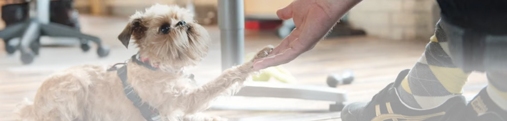
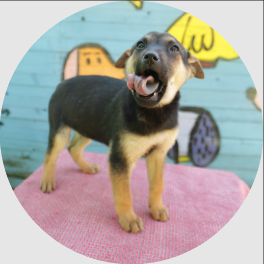
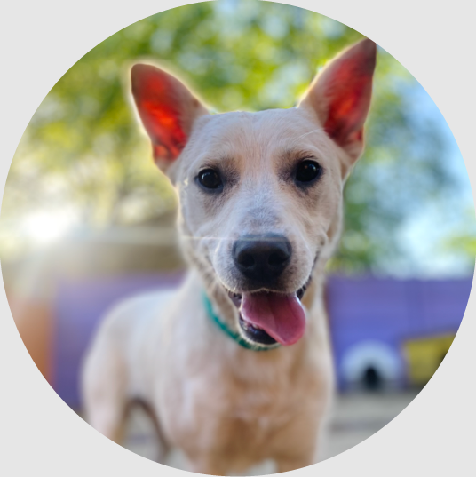
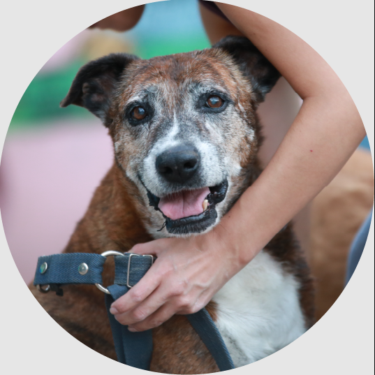
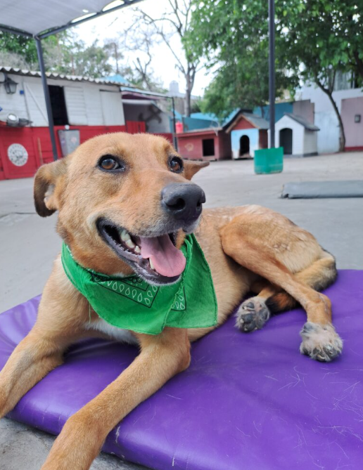

ADOPTA
ANTES DE ADOPTAR
Adopta con conciencia y corazon
Al pensar en adoptar, es crucial tener en cuenta diversos factores para garantizar una convivencia armoniosa. Evalúa el espacio disponible en tu hogar, el tiempo que puedes dedicar al juego y paseo, así como los costos asociados con la alimentación, atención veterinaria y cuidado durante las vacaciones. Asegúrate de que tu elección de mascota se ajuste a tu estilo de vida y a la cantidad de tiempo que puedes comprometer.>

CACHORRO
Menos de 1 año
Es adorable y es gratificante ver su crecimiento hasta la edad adulta
pero demanda tiempo y
esfuerzo. Requiere alimentación frecuente, hace sus necesidades muchas veces por día, rompe
objetos y acostumbra a llorar en las noches si se queda solo. La paciencia y la educación
son
esenciales durante su primer año y no se puede garantizar su tamaño final.

JOVEN
1-5 años
Es juguetón pero más adulto. Son más hábiles para aprender y adaptarse.
Come dos veces al día.
Ya tiene el tamaño definitivo, no cambiará de aspecto, ya tiene rasgos de personalidad
desarrollados y estará esterilizado.

ADULTO
5-10 años
No genera problemas por quedarse solo durante períodos razonables de
tiempo y son grandes
compañeros. Se adaptan fácilmente a un nuevo entorno familiar.

ABUELO
+10 años
Suelen ser tranquilos y sedentarios. Aunque el período de compañía
compartida posiblemente sea
más breve, puedes ofrecerles durante los años que les quedan una vida digna y agradable.
Estos abuelos, que esperaron durante mucho tiempo un hogar, muestran una gratitud sincera y
son pura entrega.
Requisitos de adopcion
 Los animales serán entregados tras
una entrevista con nuestro equipo de adopción.
Los adoptantes deberán comprometerse
a garantizar una tenencia responsable a lo largo de la vida del animal.
Los animales mayores de 6 meses se
entregarán castrados. En el caso de adoptar un cachorro más joven,
el adoptante se compromete a castrarlo entre los 6 meses y el primer año de edad, de manera
obligatoria.
Nos reservamos el derecho de aprobar
o rechazar una postulación según los criterios y valores de nuestra organización.
Los animales serán entregados tras
una entrevista con nuestro equipo de adopción.
Los adoptantes deberán comprometerse
a garantizar una tenencia responsable a lo largo de la vida del animal.
Los animales mayores de 6 meses se
entregarán castrados. En el caso de adoptar un cachorro más joven,
el adoptante se compromete a castrarlo entre los 6 meses y el primer año de edad, de manera
obligatoria.
Nos reservamos el derecho de aprobar
o rechazar una postulación según los criterios y valores de nuestra organización.
Si ya lo decidiste, y te sentís capacitado, es momento de comenzar con la postulación para
elegir a tu nuevo
compañero de vida.
